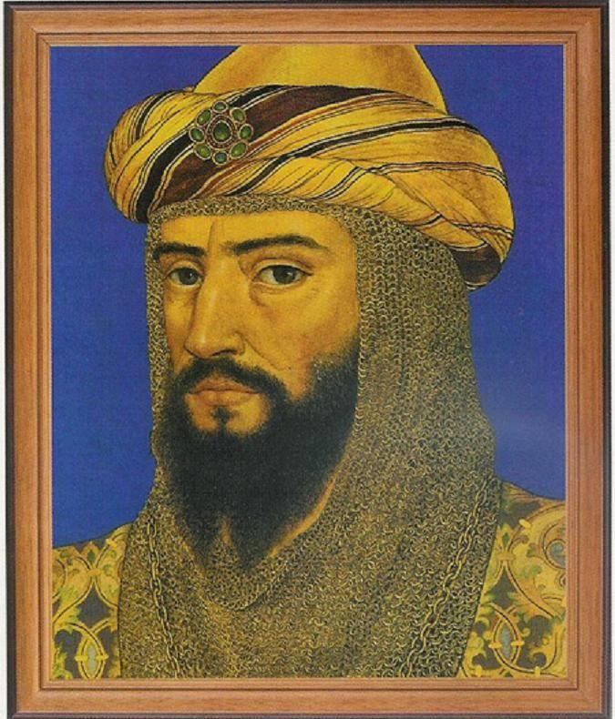
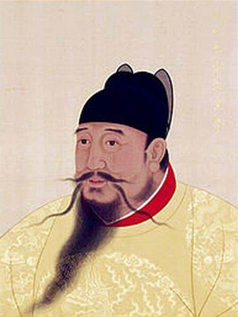
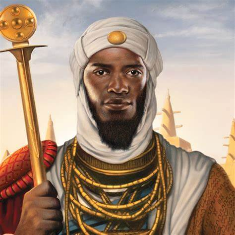

Oameni care au schimbat istoria, dar nu primesc aprecierea cuvenită
Saladin

Saladin (Ṣalāḥ ad-Dīn Yūsuf ibn Ayyūb) a fost un lider militar și politic de origine kurdă,
cunoscut pentru unificarea lumii islamice și confruntările cu cruciații în timpul secolului al XII-lea.
S-a remarcat prin recucerirea Ierusalimului în 1187.
Yongle

Zhu Di, cunoscut ca Împăratul Yongle (1360–1424), a fost al treilea împărat al Dinastiei Ming.
El a condus China între 1402 și 1424, fiind renumit pentru ambițiile sale expansioniste, reformele interne
și proiectele monumentale.
Domnia sa a fost marcată de puterea sa politică și militară, dar și de sprijinul oferit culturii și explorărilor maritime.
Mansa Musa

Mansa Musa (cca. 1280 - 1337) a fost al zecelea împărat al Imperiului Mali. Sub conducerea sa, imperiul
a cunoscut o perioadă de prosperitate incredibilă, devenind unul dintre cele mai mari centre economice și culturale ale lumii.
Este faimos pentru pelerinajul său la Mecca (1324), în timpul căruia a distribuit aur în cantități uriașe,
provocând prăbușiri temporare ale economiei în regiunile prin care a trecut.